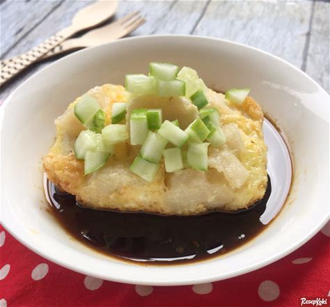
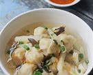

Palembang adalah ibu kota Provinsi Sumatera Selatan, Indonesia. Kota ini merupakan kota tertua yang ada di Indonesia,
yang berasal dari abad ke-7. Palembang pernah menjadi ibu kota Sriwijaya, sebuah kerajaan Melayu yang memerintah sebagian
dari Nusantara bagian barat dan menguasai rute perdagangan maritim, khususnya di Selat Malaka. Palembang digabungkan ke
dalam Hindia Belanda pada tahun 1825 setelah penghapusan Kesultanan Palembang. Palembang diberi status sebagai kota pada 1 April
1906 pada zaman Hindia Belanda. Palembang kini merupakan salah satu kota terbesar di Sumatra dan Indonesia.
Kota ini telah menjadi tuan rumah dari beberapa acara internasional,
termasuk Pesta Olahraga Asia Tenggara 2011 dan Pesta Olahraga Asia 2018.
Wisata
Kota Palembang sebagai kota terbesar kedua di Pulau Sumatera setelah Medan, memiliki potensi wisata yang tak boleh diragukan.
Tidak hanya pempek dan Jembatan Ampera, Kota Palembang juga menyimpan warisan sejarah dan budaya yang menarik, serta memberi
pengetahuan dan wawasan kepada wisatawan. Mulai dari pulau hingga wisata air, simak 25 tempat wisata di Palembang yang harus
dikunjungi saat berlibur.
Jembatan Ampera
Jembatan Ampera
Jembatan Ampera (Jawi : جمبتن أمڤيرا) (Amanat Penderitaan Rakyat) adalah sebuah jembatan di Kota Palembang, Provinsi Sumatera Selatan,
Indonesia. Jembatan Ampera, yang telah menjadi semacam lambang kota, terletak di tengah-tengah Kota Palembang, menghubungkan daerah
Seberang Ulu dan Seberang Ilir yang dipisahkan oleh Sungai Musi. Jembatan Ampera merupakan ikon kota Palembang yang paling terkenal.
Benteng Kuto Besak
Benteng Kuto Besak
Benteng Kuto Besak awalnya merupakan bangunan keraton yang pada abad XVIII menjadi pusat Kesultanan Palembang. Gagasan mendirikan
Benteng Kuto Besak diprakarsai oleh Sultan Mahmud Badaruddin I yang memerintah pada tahun 1724-1758 dan pelaksanaan pembangunannya
diselesaikan oleh penerusnya yaitu Sultan Muhammad Bahauddin yang memerintah pada tahun 1776-1803. Sultan Mahmud Bahauddin ini adalah
seorang tokoh kesultanan Palembang Darussalam yang realistis dan praktis dalam perdagangan internasional, serta seorang agamawan
yang menjadikan Palembang sebagai pusat sastra agama di Nusantara. Menandai perannya sebagai sultan, ia pindah dari Keraton
Kuto Lamo ke Kuto Besak. Belanda menyebut Kuto Besak sebagai nieuwe keraton alias keraton baru.
Makanan Tradisional
Pempek Palembang

Pempek
Pempek, mpek-mpek, atau dalam bahasa Indonesia gaul empek-empek, adalah makanan khas Palembang, Sumatera Selatan. Proses pembuatannya
yakni dibuat dari daging ikan yang digiling lembut, dicampur tepung kanji atau tepung sagu, serta dengan penambahan komposisi bahan
lain seperti telur, bawang putih yang dihaluskan, penyedap rasa, dan garam. Pempek biasanya disajikan dengan kuah yang disebut cuko
yang memiliki rasa asam, manis, dan pedas.
Tekwan

Tekwan
Tekwan adalah hidangan sup yang berasal dari Palembang. Tekwan sendiri merupakan singkatan dari kepanjangan “Berkotek Samo Kawan”
yang dalam bahasa Indonesia dapat diartikan menjadi “mengobrol dengan teman”.